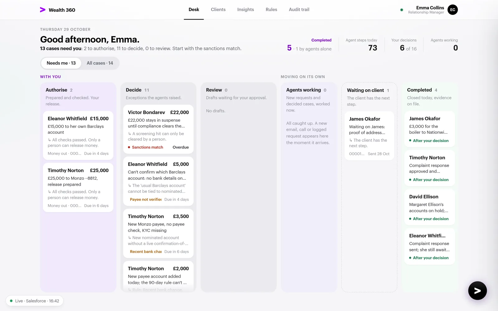
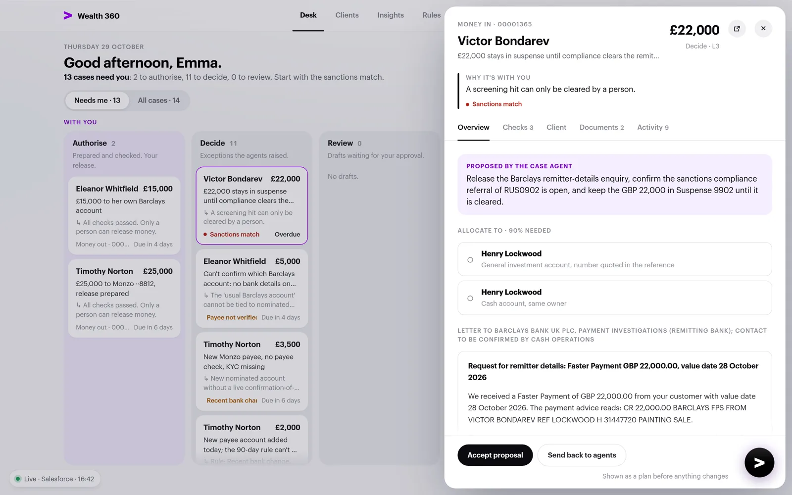
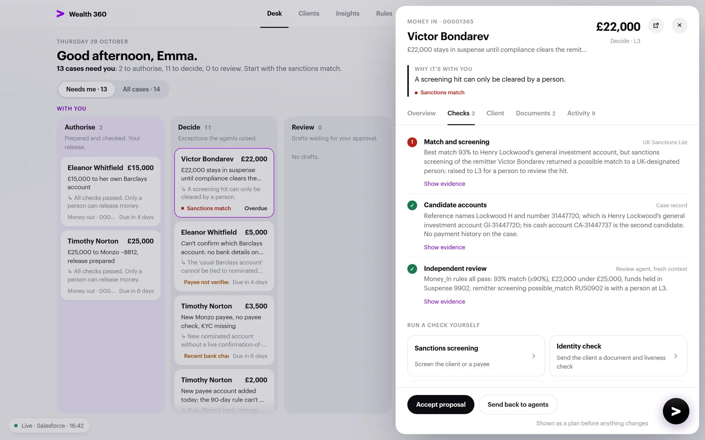
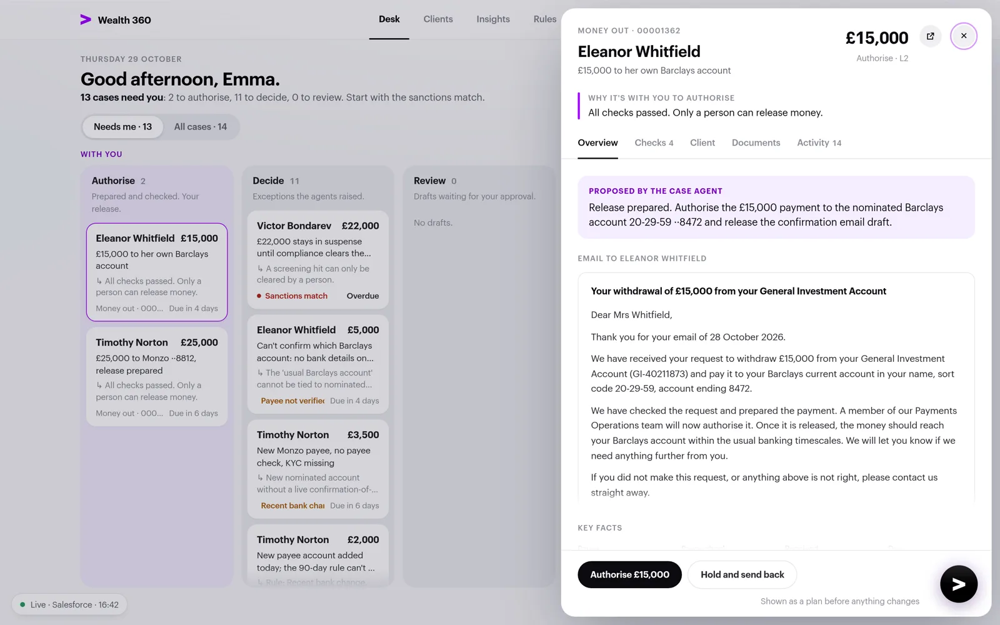

Wealth servicing · a working proof of concept
Most of servicing is gathering and checking. Very little is the decision.
A client moves house. A client wants money out. A payment arrives nobody can match. A family loses someone. A client complains. Each needs the same checks across the client record, the KYC file, the payee and the sanctions list, and each must leave a trail a reviewer can follow. Wealth 360 gives the gathering to agents and keeps the judgement with people.
The Case agent
Works each request through its journey, one step at a time, and cites the exact quote and source behind every step.
The Review agent
Checks the case against the journey's rules in a fresh context. It never sees the maker's reasoning, and it sends weak work back.
The person
Gets exceptions with the evidence and a proposed action. The decision is staged, shown back step by step, and confirmed by name.
Salesforce
Holds the journeys, rules and levels as metadata, keeps the record and the audit trail, and enforces who may do what.
The decision stays human
The agents prepare. A named person signs.
Authorise, approve, release: each one is staged first, shown back as a plan, and only then confirmed behind a single-use token, recorded against the person who confirmed it.
One board. What needs you, and what is moving on its own.
The relationship manager asks Claude for the desk, and it opens as a live page, reading straight from Salesforce through her own connector. Click through the views.




The board01 · The board
Where to start, in one sentence.
With you: Authorise, Decide, Review. Moving on its own: agents working, waiting on the client, completed.
A Completed counter shows what closed, and how much of it the agents resolved on their own.
Every card says why it is there.
02 · An exception
A screening hit only ever goes to a person.
£22,000 from Victor Bondarev, a possible match on the UK Sanctions List.
The agent proposes: keep it in suspense, ask the remitting bank, refer to compliance.
03 · The checks
Every outside check, with its source.
Match scoring in code, 93% against a 90% threshold.
The independent review, and checks the person can run again by hand.
04 · Authorise
Prepared and checked. The release is yours.
Payee verified, account ownership confirmed, no recent bank change.
Only a person can release money.
The running product, not a mock-up. Every screen above was captured from the live desk against the sandbox, with fictional clients.
The requests that keep coming back, run live.
Five journeys, forty nine steps, each with its actor, its stage and its evidence rule, held in Salesforce as custom metadata. Change a rule there, and the agents follow it the next time they run.
Money out, released by a person
Payee, ownership and recent bank changes checked; the release is staged and confirmed by name.
LiveA sanctions match on a credit
The remitter screened against the UK Sanctions List; the funds held in suspense for a person.
LiveA change of address, straight through
From an email and a water bill to an updated record and a confirmation, with no person, only when every fence holds.
LiveA request logged by phone
Logged from the desk, picked up within seconds, handed back when it falls outside the journey's rules.
LiveIdentity, verified and written back
A document and liveness check sent by link; the result lands on the client's KYC profile by itself.
LiveReading a document
Drop a bill on the desk; Claude reads the name, address and date, and files it on the case.
LiveA complaint, from email to answer
Classified, cause found, response drafted, checked, approved and emailed on the bank's letterhead.
Live end to endEveryday actions
Log a call, book a meeting, add a note: standard Salesforce tasks and events, on the client and the case.
LiveA bereavement, handled with care
Death recorded, accounts on hold, letter approved and sent, a one-to-one booked with the executor.
Live end to endTwo cases, from the client's email to a sent letter.
Worked on 29 October in the sandbox, as they happened. The agents did the work in minutes; the person decided in seconds.
"Please treat this as a formal complaint."
- ClientEleanor Whitfield emails: she has heard nothing about her £15,000 withdrawal.
- Case agentClassifies the complaint and finds the cause in Salesforce: the payment is waiting for a person to authorise it, and nobody told her.
- Review agentSends the case back once: the eight week deadline was wrong. The Case agent fixes it and drafts the response.
- Relationship managerReads the response, approves it, confirms the plan.
- SalesforceEmails the response to the client on the bank's letterhead, and records it on the case.
"My mother, Margaret Ellison."
- ExecutorDavid Ellison emails the death certificate and the grant of probate.
- Case agentReads both, finds Margaret's three accounts, records her death; Salesforce checks the certificate and the family link, then puts the accounts on hold.
- Case agentFinds David's identity already on file, drafts a condolence letter, proposes a one-to-one with three slots.
- Review agentPasses the case first time.
- Relationship managerApproves the letter as drafted, picks a slot, confirms.
- SalesforceEmails the letter and books the meeting, with David as the contact.
The live bereavement case, sped up ten times: the progress bar fills and each agent step lands on the Activity tab with its time, until the case comes back to the relationship manager for approval. Nothing on screen is mocked.
Time-lapse, about four minutes at ten times speed.
Salesforce stays the system of record
Every rule, every record, every step on file.
Journeys and rules live as custom metadata. Cases, checks, decisions and the audit trail live on standard Financial Services Cloud records, under the bank's own sharing and permissions.
Safety enforced in code, not in a prompt.
The agents run as their own identity, with their own permissions. Whatever an agent is told, Salesforce refuses what it is not allowed to do.
No agent can decide
Stage, confirm, approve and release belong to people. The agent identity cannot call them, and Salesforce rejects them if it tries.
Staged, shown, confirmed
A decision is staged first and shown back as a plan. It runs only on confirmation, behind a single-use token, recorded against the person.
Straight through only when clean
A change of address completes without a person only at level one, with identity verified on file, an address match and no money moving.
A death is recorded only with proof
Accounts go on hold only when a death certificate is on the case, the date is real, and the deceased is the client or a recorded relative.
Drafts wait for a person
Agents send only document requests and address confirmations, to allowlisted addresses. Every other letter waits for a person's release.
Switches and limits
An admin app controls which journeys the agents may work, their working hours and a daily spend cap, and records every run.
Claude in front, Salesforce underneath, two connectors in between.
The desk talks to two MCP connectors. Wealth 360 is a Salesforce hosted MCP server that runs as the signed-in person. Wealth 360 Checks runs the outside checks and writes every result back to Salesforce. The agents run on their own, woken by a platform event within seconds of a case changing.
Everything you need to run the demo.
The User Guide walks a relationship manager or presenter through the desk and every use case, step by step. The plugin and its changelog live in this repository.
The User Guide
The desk, decisions, all nine use cases, the Salesforce side, email, a demo script and troubleshooting.
Open the PDF User Guide · webRead it in the browser
The same guide as a web page, with every figure.
Open the guide Plugin · version 0.12.0Install the plugin
The desk page, the chat skills and the two agents, for Claude Cowork and Claude Code. Needs the two connectors.
View on GitHubThe same pattern fits every servicing request a bank handles: agents that gather and check, cite every step and send weak work back, with Salesforce holding the rules. The people stay where they matter, on the decisions.
Proof of concept. Built in a Salesforce sandbox with fictional clients, accounts and documents, and no real customer data. Not a product and not offered for sale. Figures, timings and costs come from test runs and are illustrative; anything said about future capability is an intention, not a commitment.